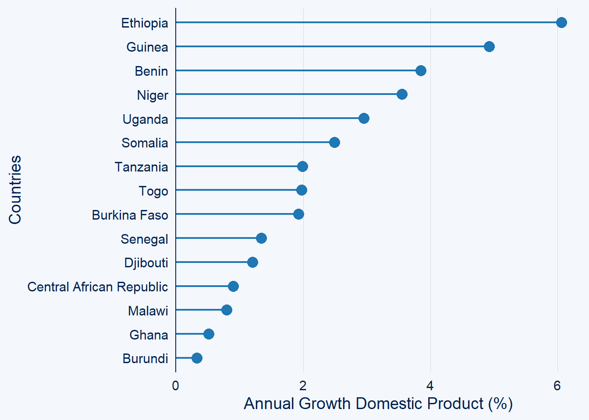

Plotting with ggcharts Package in R
![]()
Introduction
Data visualization is an essential tool for data analysis and interpretation. R is a popular programming language for data analysis and visualization, and ggplot2 (Wickham, 2016) is a widely used package for creating high-quality graphics. However, ggplot2 can be challenging for beginners due to its steep learning curve. The ggcharts (Neitmann, 2020) package provides a simpler and more intuitive interface for creating charts using ggplot2. In this blog post, we will focus on the bar_chart and lollipop_chart functions in ggcharts and provide illustrative examples.
Let’s install the package in our machine if not installed
Then load the packages in our machine
Bar Chart Function
The bar_chart function in ggcharts creates a vertical bar chart with optional error bars. The function takes a data frame, x and y variables, and optional arguments such as error bars, color, and fill. Here is an example of how to create a bar chart using the ggcharts package:
Lollipop Chart Function
The lollipop_chart function in ggcharts creates a lollipop chart, which is a combination of a scatter plot and a bar chart. The function takes a data frame, x and y variables, and optional arguments such as color, fill, and size. Here is an example of how to create a lollipop chart using the ggcharts package:
Gross Domestic Product (GDP) growth annual
To demonstrate the use of ggcharts package, we need a dataset that contains annual GDP growth data. For this example, let’s assume we have a dataframe named “gdp_data” with three columns: “country”, “year” and “gdp.” Ensure your data is in a similar format before proceeding. The annual Gross Domestic Product (GDP) growth for the world was extracted from the website https://data.worldbank.org/country. This data is crucial in understanding the economic progress of countries across the globe. The GDP growth rate is a measure of the increase in the value of goods and services produced by a country over a specific period. It is an important indicator of a country’s economic health and development. By analyzing this data, policymakers can make informed decisions to improve their country’s economic performance. The World Bank’s website provides a comprehensive database of GDP growth rates for countries around the world, making it a valuable resource for researchers, policymakers, and investors.
Let read the data from our working directory into the R session using read_csv function from readr package (Wickham et al., 2017) and assign the variables with appropriate names with rename function from dplyr (Wickham et al., 2019)
# A tibble: 266 × 68
country code `Indicator Name` `Indicator Code` `1960` `1961` `1962` `1963`
<chr> <chr> <chr> <chr> <lgl> <dbl> <dbl> <dbl>
1 Aruba ABW GDP growth (ann… NY.GDP.MKTP.KD.… NA NA NA NA
2 Africa E… AFE GDP growth (ann… NY.GDP.MKTP.KD.… NA 0.255 7.97 5.15
3 Afghanis… AFG GDP growth (ann… NY.GDP.MKTP.KD.… NA NA NA NA
4 Africa W… AFW GDP growth (ann… NY.GDP.MKTP.KD.… NA 1.85 3.77 7.28
5 Angola AGO GDP growth (ann… NY.GDP.MKTP.KD.… NA NA NA NA
6 Albania ALB GDP growth (ann… NY.GDP.MKTP.KD.… NA NA NA NA
7 Andorra AND GDP growth (ann… NY.GDP.MKTP.KD.… NA NA NA NA
8 Arab Wor… ARB GDP growth (ann… NY.GDP.MKTP.KD.… NA NA NA NA
9 United A… ARE GDP growth (ann… NY.GDP.MKTP.KD.… NA NA NA NA
10 Argentina ARG GDP growth (ann… NY.GDP.MKTP.KD.… NA 5.43 -0.852 -5.31
# ℹ 256 more rows
# ℹ 60 more variables: `1964` <dbl>, `1965` <dbl>, `1966` <dbl>, `1967` <dbl>,
# `1968` <dbl>, `1969` <dbl>, `1970` <dbl>, `1971` <dbl>, `1972` <dbl>,
# `1973` <dbl>, `1974` <dbl>, `1975` <dbl>, `1976` <dbl>, `1977` <dbl>,
# `1978` <dbl>, `1979` <dbl>, `1980` <dbl>, `1981` <dbl>, `1982` <dbl>,
# `1983` <dbl>, `1984` <dbl>, `1985` <dbl>, `1986` <dbl>, `1987` <dbl>,
# `1988` <dbl>, `1989` <dbl>, `1990` <dbl>, `1991` <dbl>, `1992` <dbl>, …The dataset is for global, but we are interested for countries in Africa and get rid of countries from other continent. However, the gdp dataset does not have field for world continents. We can fix that by joining that information from other datase. Let’s us load the country_codes informtion from the geodata package (Hijmans et al., 2023)
africa.countries = geodata::country_codes() %>%
filter(continent == "Africa") %>%
select(country = 1, code = 2) %>%
as_tibble()
africa.countries# A tibble: 59 × 2
country code
<chr> <chr>
1 Algeria DZA
2 Angola AGO
3 Benin BEN
4 Botswana BWA
5 Burkina Faso BFA
6 Burundi BDI
7 Cameroon CMR
8 Cabo Verde CPV
9 Central African Republic CAF
10 Chad TCD
# ℹ 49 more rowsNow we can merge the two dataset and then filter the gdp information for Africa countries
gdp.africa = africa.countries %>%
left_join(gdp.world) %>%
pivot_longer(cols = 5:67, values_to = "gdp", names_to = "year") %>%
select(country, year, gdp) %>%
mutate(year = as.integer(year))
gdp.africa# A tibble: 3,717 × 3
country year gdp
<chr> <int> <dbl>
1 Algeria 1960 NA
2 Algeria 1961 -13.6
3 Algeria 1962 -19.7
4 Algeria 1963 34.3
5 Algeria 1964 5.84
6 Algeria 1965 6.21
7 Algeria 1966 -4.80
8 Algeria 1967 9.45
9 Algeria 1968 10.8
10 Algeria 1969 8.43
# ℹ 3,707 more rowsTable 1 shows the annual growth in percentage of the gross domestic product across Africa over the last five year.
gdp.africa %>%
filter(year %in% 2018:2022) %>%
mutate(year = as.character(year)) %>%
pivot_wider(values_from = "gdp", names_from = "year", names_prefix = "Year ") %>%
drop_na()%>%
gt::gt() %>%
# fmt_number(decimals = 1) |>
# fmt_integer(ID) |>
cols_label_with(
fn = ~ janitor::make_clean_names(., case = "all_caps")
) |>
data_color(
columns = 'Year 2018',
palette = hcl.colors(n = 60, palette = "Roma")
) |>
data_color(
columns = 'Year 2019',
palette = hcl.colors(n = 60, palette = "Roma")
) |>
data_color(
columns = 'Year 2020',
palette = hcl.colors(n = 60, palette = "Roma")
)|>
data_color(
columns = 'Year 2021',
palette = hcl.colors(n = 60, palette = "GnBu")
)|>
data_color(
columns = 'Year 2022',
palette = hcl.colors(n = 60, palette = "GnBu")
)| COUNTRY | YEAR_2018 | YEAR_2019 | YEAR_2020 | YEAR_2021 | YEAR_2022 |
|---|---|---|---|---|---|
| Algeria | 1.2000000 | 1.0000000 | -5.1000000 | 3.4000000 | 3.1000000 |
| Angola | -1.3163617 | -0.7022730 | -5.6382147 | 1.1992105 | 3.0454030 |
| Benin | 6.6972595 | 6.8656873 | 3.8487924 | 7.1554516 | 6.2532449 |
| Botswana | 4.1898469 | 3.0325566 | -8.7294515 | 11.8703583 | 5.7823492 |
| Burkina Faso | 6.6045691 | 5.6881151 | 1.9303249 | 6.9063417 | 1.4793006 |
| Burundi | 1.6099354 | 1.8125653 | 0.3271569 | 3.1000000 | 1.8490000 |
| Cameroon | 3.9555142 | 3.4750600 | 0.2599329 | 3.6499169 | 3.5409779 |
| Cabo Verde | 3.7069646 | 7.6360817 | -19.3028228 | 6.8111764 | 17.7141812 |
| Central African Republic | 3.7894436 | 3.1000000 | 0.9000000 | 0.9000000 | 0.0000000 |
| Chad | 2.3740378 | 3.2471819 | -1.6000067 | -1.1999905 | 2.2359797 |
| Comoros | 3.6424511 | 1.7607802 | -0.1955568 | 2.1121956 | 2.3876785 |
| Djibouti | 4.7744169 | 5.5451306 | 1.2020220 | 4.8000000 | 3.0000000 |
| Equatorial Guinea | -6.2365441 | -5.4818254 | -4.2414813 | -0.9453829 | 3.1457983 |
| Ethiopia | 6.8161478 | 8.3640857 | 6.0595309 | 5.6415307 | 5.3170960 |
| Gabon | 0.8379166 | 3.9208088 | -1.8377611 | 1.4679573 | 3.0369419 |
| Ghana | 6.2000777 | 6.5077748 | 0.5139417 | 5.3564779 | 3.2397063 |
| Guinea-Bissau | 1.2837367 | 4.5000000 | -2.4000000 | 3.8000024 | 3.5000496 |
| Guinea | 6.3584919 | 5.6169145 | 4.9202664 | 3.9000000 | 4.7000000 |
| Kenya | 5.6479464 | 5.1141589 | -0.2727663 | 7.5904895 | 4.8466349 |
| Lesotho | -1.4806336 | -0.7642260 | -5.6194024 | 1.5576798 | 0.5919178 |
| Liberia | 1.1575751 | -2.4672976 | -2.9824913 | 4.9867128 | 4.8081135 |
| Libya | 7.9413679 | -11.1956946 | -29.7871480 | 31.3725154 | -1.2369819 |
| Madagascar | 3.1943565 | 4.4112321 | -7.1376716 | 5.7396157 | 3.7962049 |
| Malawi | 4.3916883 | 5.4481813 | 0.7999983 | 2.7514026 | 0.9234363 |
| Mali | 4.7464843 | 4.7561608 | -1.2354504 | 3.0526136 | 3.6874841 |
| Mauritania | 4.7721736 | 5.2966374 | -0.9385162 | 2.4453683 | 5.2000000 |
| Mauritius | 4.0067406 | 2.8912850 | -14.5973980 | 3.3993801 | 8.6907351 |
| Morocco | 3.0656413 | 2.8909748 | -7.1870796 | 7.9296679 | 1.0799695 |
| Mozambique | 3.4438131 | 2.3144426 | -1.1985483 | 2.3275236 | 4.1484145 |
| Namibia | 1.0599435 | -0.8391547 | -8.1014008 | 3.5246580 | 4.5602940 |
| Niger | 7.2108030 | 5.9413969 | 3.5502275 | 1.3871292 | 11.5000049 |
| Nigeria | 1.9227573 | 2.2084293 | -1.7942531 | 3.6471865 | 3.2516814 |
| Rwanda | 8.5398365 | 9.4640253 | -3.3739863 | 10.8767338 | 8.1574877 |
| Senegal | 6.2092410 | 4.6136281 | 1.3420738 | 6.5396737 | 4.1538565 |
| Seychelles | 3.7094343 | 4.8769462 | -8.6492065 | 5.4000000 | 8.8000002 |
| Sierra Leone | 3.4729026 | 5.2537463 | -1.9684869 | 4.1047001 | 3.5007417 |
| Somalia | 7.5309693 | 7.4565215 | 2.4893743 | 4.0491105 | 4.7987790 |
| South Africa | 1.5223294 | 0.3034532 | -6.3424711 | 4.9130967 | 2.0422994 |
| Sudan | -2.6809305 | -2.1782510 | -3.6298008 | -1.8685205 | -0.9534070 |
| Eswatini | 2.3800955 | 2.6921683 | -1.5596426 | 7.8833064 | 3.9145410 |
| Tanzania | 5.4575829 | 5.8000000 | 1.9919646 | 4.3213843 | 4.5580273 |
| Togo | 5.1384723 | 4.9229259 | 1.9757429 | 5.9915720 | 5.8105400 |
| Tunisia | 2.6248283 | 1.5880128 | -8.8178788 | 4.4053620 | 2.5217614 |
| Uganda | 6.3039238 | 6.4387450 | 2.9513064 | 3.5365803 | 4.6501337 |
| Zambia | 4.0344939 | 1.4413060 | -2.7850551 | 4.5987340 | 4.7449425 |
| Zimbabwe | 5.0098668 | -6.3324464 | -7.8169506 | 8.4680169 | 3.4000000 |
Barchart
Let’ check the bar chart for all countries in Africa
gdp.africa %>%
filter(year == 2020) %>%
ggcharts::bar_chart(x = country, y = gdp)+
labs(x = "Countries",
y = "Annual Growth Domestic Product (%)")+
labs(x = "Countries", y = "Annual Growth Domestic Product (%)")We notice that the countries are cluttered and make it difficult to visualize and read them. Fortunate, bar_chart has a wrapper top_n function, that can limit only a certain number of countries with positive values to be plotted
gdp.africa %>%
filter(year == 2020) %>%
ggcharts::bar_chart(x = country, y = gdp, top_n = 20)+
labs(x = "Countries",
y = "Annual Growth Domestic Product (%)")+
labs(x = "Countries", y = "Annual Growth Domestic Product (%)")
Likewise, the negative values prefix of top_n will limit only list
gdp.africa %>%
filter(year == 2020) %>%
ggcharts::bar_chart(x = country, y = gdp, top_n = -20)+
labs(x = "Countries", y = "Annual Growth Domestic Product (%)")We can highlight the country of interest with highlight function
gdp.africa %>%
filter(year == 2020) %>%
ggcharts::bar_chart(x = country, y = gdp, top_n = 15,
highlight = "Tanzania")+
labs(x = "Countries", y = "Annual Growth Domestic Product (%)")You can highlight more than one
gdp.africa %>%
filter(year == 2020) %>%
ggcharts::bar_chart(x = country, y = gdp, top_n = 15,
highlight = c("Tanzania", "Ghana"))+
labs(x = "Countries", y = "Annual Growth Domestic Product (%)")and use the facet if you wish to check the change of highlighted countries for more than one year
gdp.africa %>%
filter(year %in% c(2019:2022)) %>%
ggcharts::bar_chart(x = country, y = gdp, top_n = 10,
highlight = "Tanzania", facet = year)+
labs(x = "Countries", y = "Annual Growth Domestic Product (%)")and finally the theme
Lollipop plot
gdp.africa %>%
filter(year == 2020) %>%
ggcharts::lollipop_chart(x = country, y = gdp)+
labs(x = "Countries", y = "Annual Growth Domestic Product (%)")gdp.africa %>%
filter(year == 2020) %>%
ggcharts::lollipop_chart(x = country, y = gdp, top_n = 15)+
labs(x = "Countries", y = "Annual Growth Domestic Product (%)")
gdp.africa %>%
filter(year == 2020) %>%
ggcharts::lollipop_chart(x = country, y = gdp, top_n = -15)+
labs(x = "Countries", y = "Annual Growth Domestic Product (%)")gdp.africa %>%
filter(year == 2020) %>%
ggcharts::lollipop_chart(x = country, y = gdp, top_n = 15,
highlight = "Tanzania")+
labs(x = "Countries", y = "Annual Growth Domestic Product (%)")gdp.africa %>%
filter(year == 2020) %>%
ggcharts::lollipop_chart(x = country, y = gdp, top_n = 15,
highlight = c("Tanzania", "Ghana"))+
labs(x = "Countries", y = "Annual Growth Domestic Product (%)")